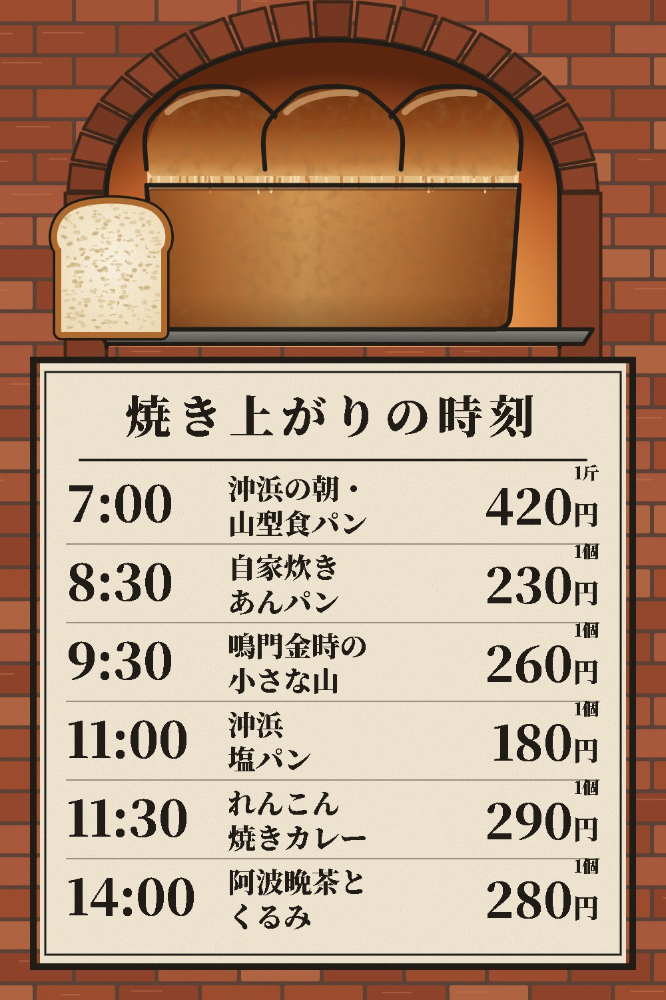
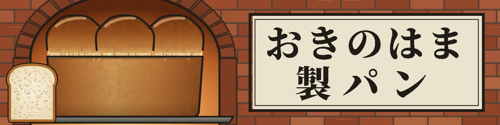

おきのはま：店先のメニュー（A型の立て看板）
上半分は、決まった横長看板と同じ窯と食パンです。下の板に、6品の焼き上がりの時刻と値段を並べました。時刻は看板から外し、ここだけに載せています。画像を押すと実寸で開きます。

少し離れて見たときの大きさ（幅200ピクセル）
決まった横長看板

上半分は、決まった横長看板と同じ窯と食パンです。下の板に、6品の焼き上がりの時刻と値段を並べました。時刻は看板から外し、ここだけに載せています。画像を押すと実寸で開きます。

